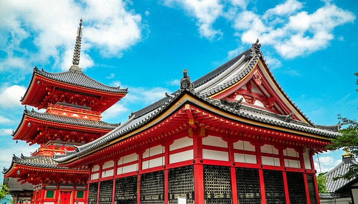
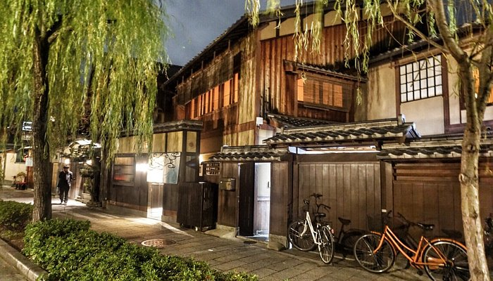
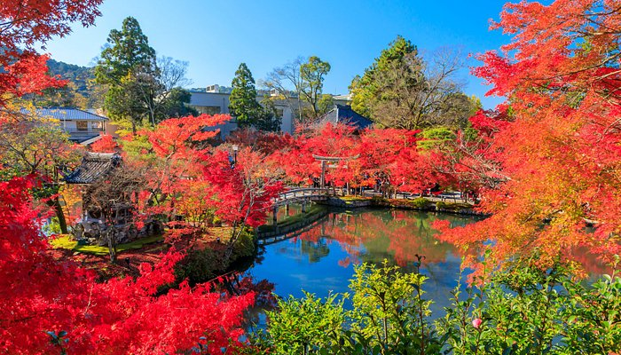

Fushimi Inari Taisha
Один из самых известных синтоистских храмов в Kyoto. Посвящён божеству Инари — покровителю риса, торговли и процветания.
Главная особенность — тысячи ярко-красных ворот тории (аллея Сэнбон-тории), которые образуют длинные туннели по склону горы Инари. Эти ворота жертвуют частные лица и компании.
На территории много статуй лис (кицунэ) — они считаются посланниками Инари. Храмовый комплекс поднимается в гору, и путь к вершине занимает примерно 2–3 часа.

Kinkaku-ji
Знаменитый дзэн-буддийский храм в Kyoto, известный как «Золотой павильон».
Здание покрыто сусальным золотом и отражается в пруду, создавая симметричный пейзаж. Изначально это была вилла сёгуна Ashikaga Yoshimitsu, позже превращённая в храм.
Современное здание — реконструкция 1955 года после пожара. Вокруг расположен классический японский сад, рассчитанный на созерцание с разных точек.

Arashiyama Bamboo Grove
Известная бамбуковая роща в районе Arashiyama в Kyoto.
Высокие стебли бамбука образуют плотные «коридоры», создавая особую атмосферу и характерный звук ветра. Это популярное место для прогулок и фотографий.
Рядом находятся храм Tenryu-ji и мост Togetsukyo Bridge, поэтому рощу обычно посещают как часть общего маршрута по району.

Храм Киёмидзу-дэра
Один из самых известных буддийских храмов в Kyoto, основанный в VIII веке.
Главная особенность — большая деревянная терраса, построенная без единого гвоздя, с которой открывается вид на город и природу. Храм особенно популярен осенью и весной из-за яркой листвы и цветения сакуры.
На территории находится водопад Отова: посетители пьют воду из трёх потоков, каждый из которых символизирует здоровье, успех и долголетие.

Гион
Исторический район в Kyoto, известный как центр культуры гейш.
Здесь сохранились традиционные деревянные дома (матия), узкие улицы и чайные домики, где работают гейши и майко. Самая известная улица — Ханамикодзи.
Район особенно атмосферный вечером, когда зажигаются фонари. Рядом находится храм Yasaka Shrine, связанный с праздниками и фестивалями.

Ейкан-до
Буддийский храм в Kyoto, известный своими осенними кленами.
Особенность — статуя Будды Амиды, смотрящая назад (уникальная поза, редкая для японских храмов). Храмовый комплекс включает деревянные галереи и павильоны, соединённые между собой.
Ейкан-до особенно популярен осенью: листья клёна создают яркие красно-оранжевые пейзажи, а вечером проводится подсветка территории.